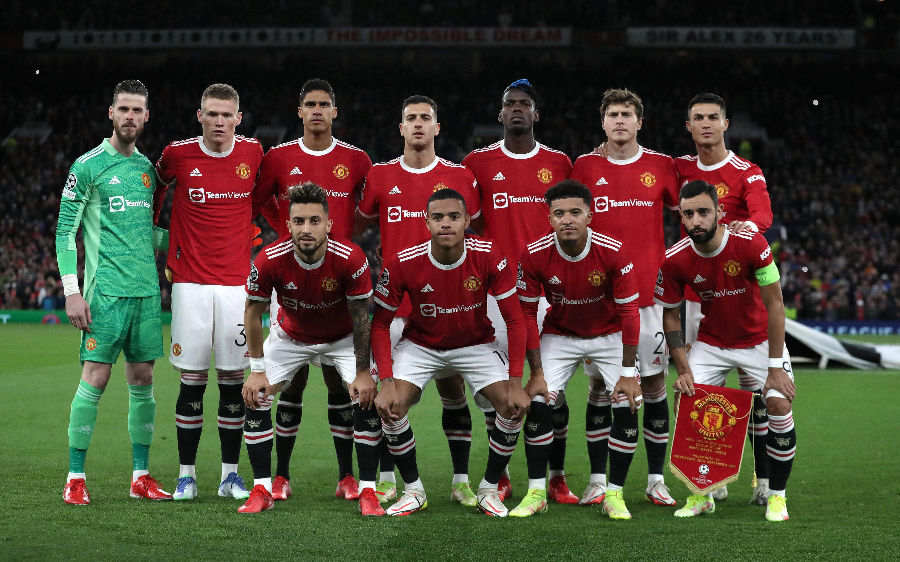

Fan Page
About our club
Manchester United Football Club is a professional football club based in Old Trafford, Greater Manchester, England, that competes in the Premier League, the top flight of English football. Nicknamed the Red Devils, the club was founded as Newton Heath LYR Football Club in 1878, but changed its name to Manchester United in 1902. The club moved from Newton Heath to its current stadium, Old Trafford, in 1910. Manchester United have won the joint-record number of trophies in English club football,[5][6] including a record 20 League titles, 12 FA Cups, five League Cups and a record 21 FA Community Shields. They have won the European Cup/UEFA Champions League three times, and the UEFA Europa League, the UEFA Cup Winners' Cup, the UEFA Super Cup, the Intercontinental Cup and the FIFA Club World Cup once each. In 1968, under the management of Matt Busby, 10 years after eight of the club's players were killed in the Munich air disaster, they became the first English club to win the European Cup. More Info ...